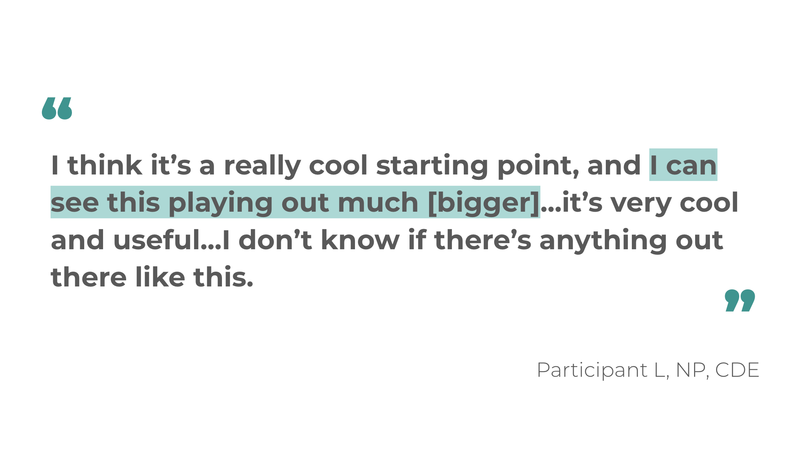

Press Release: First Community-Driven Projects “Reimagining Diabetes Support” to 50+ stakeholders
This Wednesday, September 2nd, the Diabetes Design Initiative will present the culmination of an entire Summer of work to over 50 stakeholders in the healthcare industry.

Our team is excited to share a prototype that will redefine the way people living with diabetes control their lives. Check this page back soon to access our newest prototype.